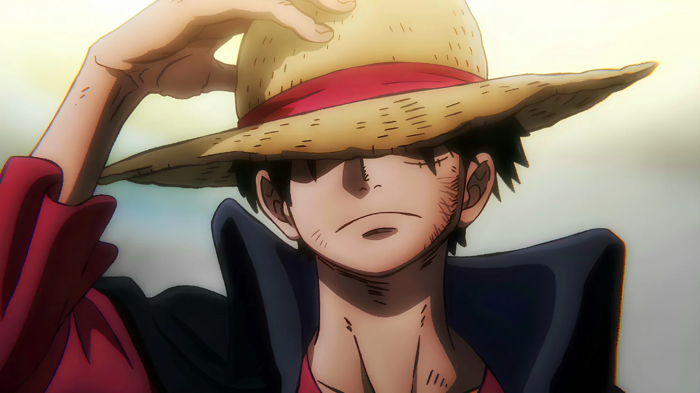
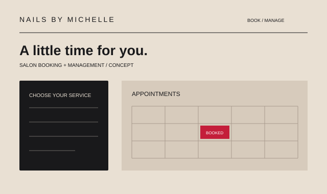
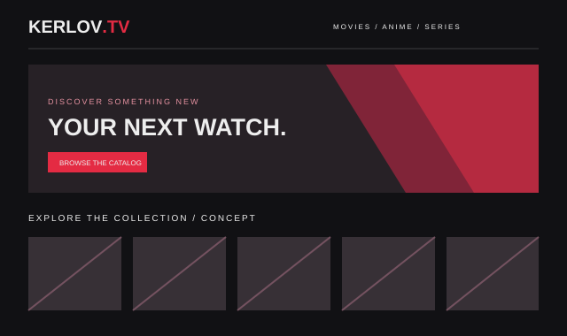
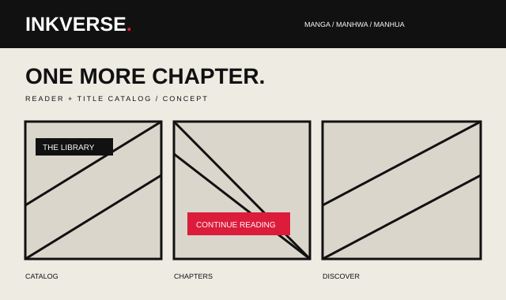
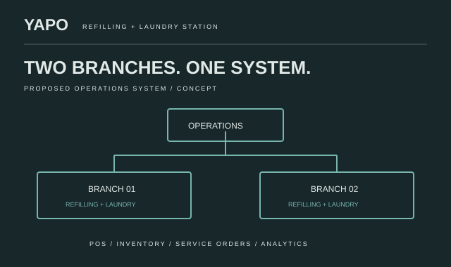
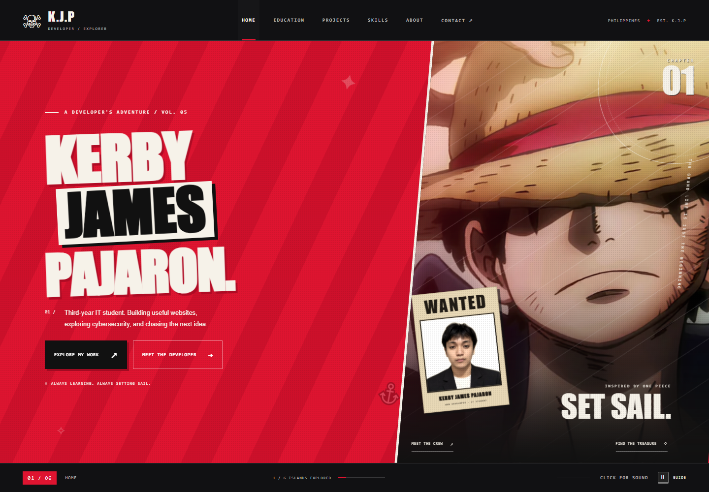
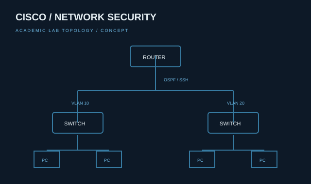

BS INFORMATION
TECHNOLOGY
PHINMA Cagayan de Oro College
Currently learning, building, and growing.SETTING SAIL // K.J.P
Preparing the voyage…
A DEVELOPER'S ADVENTURE / VOL. 05
Third-year IT student. Building useful websites,
exploring cybersecurity, and chasing the next idea.

THE LOGBOOK / 01
Every adventure starts with a little curiosity.
PHINMA Cagayan de Oro College
Currently learning, building, and growing.PHINMA Cagayan de Oro College Senior High School
BUILT WITH CURIOSITY / 02
SIX PROJECTS. A LOT OF LEARNING.
SELECT A CARD FOR THE FULL STORY.

CONCEPT PREVIEWSalon booking and management, from appointments to an administrator dashboard.

CONCEPT PREVIEWA cinematic movie, anime, and series discovery website with watchlists and profiles.

CONCEPT PREVIEWA manga, manhwa, and manhua reading project with catalogs and chapter reading.

CONCEPT PREVIEWA proposed web-based operations system for two refilling and laundry branches.

ACTUAL LOCAL SCREENSHOTThe interactive personal portfolio you are exploring. Code, characters, and a little adventure.

CONCEPT PREVIEWHands-on Packet Tracer labs in networking, authentication, and secure device access.
Concept previews illustrate each project's purpose. Public demos and original screenshots have not been supplied.
TOOLS OF THE TRADE / 03
Learning by making things that work.
Exploring networking and cybersecurity through academic labs, with hands-on experience in data annotation.
Bars are illustrative self-assessments, not certified proficiency scores.
THE PERSON BEHIND THE CODE / 04
I'm a third-year Information Technology student at PHINMA Cagayan de Oro College. I enjoy creating practical websites, learning new technologies, and improving my skills through hands-on projects.
My goal is to grow into a capable developer and create useful digital experiences.
LiDAR annotation, robotics-related annotation, image segmentation, and 2D annotation.
THE NEXT ADVENTURE / 05
Have an idea? Let's start a conversation.
GOOD CODE. GREAT ADVENTURES.See you on the Grand Line. — K.J.P